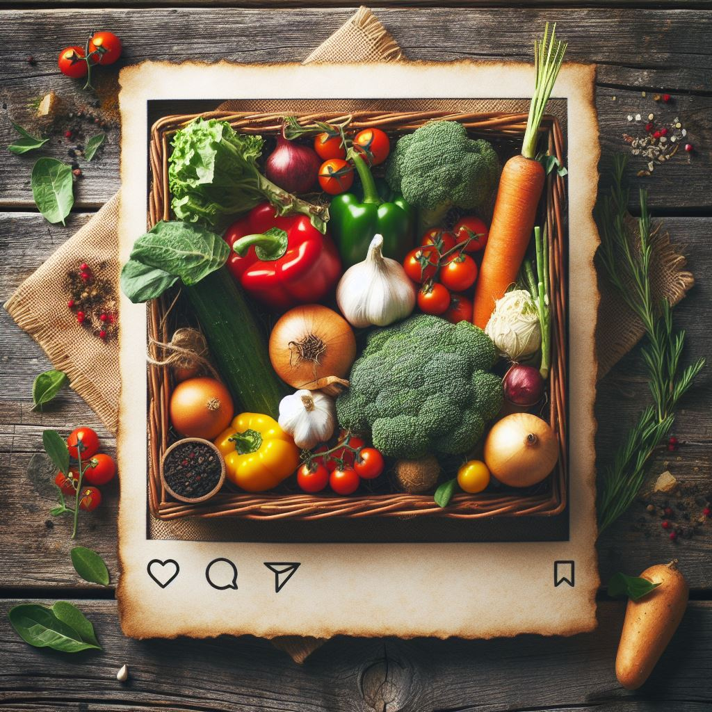

A Alimentação Ecológica nos traz clareza de que nosso organismo individual e humano, que tanto questionamos como manter saudável, só se tornará integralmente saudável quando passarmos a nos relacionar com o organismo central que nos nutre e nos sustenta. A natureza, a Terra.
Alimentação Ecológica não é só a nossa escolha pelos alimentos, mas o que a gente faz com esses alimentos. Então, é quando a gente faz o aproveitamento integral desse alimento, quando a gente faz uso não somente do fruto ou do tubérculo, que é convencionalmente utilizado, quando a gente prepara as folhas, as ramas, os talos, e agregamos nutricionalmente. Essas partes também têm um
perfil nutricional que pode nos ajudar na nossa alimentação enquanto aproveitamos a energia solar, porque a planta faz uso de toda essa sinergia, tanto do sol quanto dessa articulação com as plantas, com as águas, com o solo. Pensar a alimentação ecológica é pensar todas essas conexões", conceitua a nutricionista Bruna Crioula onista Bruna Crioula.